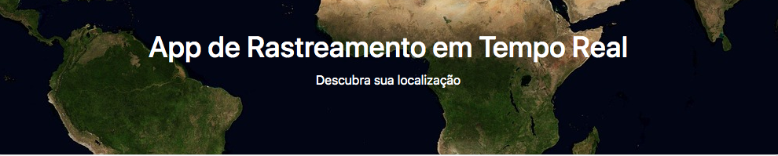

Sites profissionais
Uma presença digital confiável para apresentar sua empresa, seus serviços e facilitar o contato com novos clientes.
- Design personalizado e responsivo
- Estrutura preparada para o Google
- Integração com WhatsApp e formulários
Desenvolvimento web estratégico
Sites profissionais, landing pages e soluções sob medida — do planejamento à publicação, com atendimento direto e foco no seu objetivo.

Soluções digitais
Precisa de uma presença profissional, uma campanha que converte ou uma solução específica? Eu construo a experiência certa para o seu momento.
Uma presença digital confiável para apresentar sua empresa, seus serviços e facilitar o contato com novos clientes.
Páginas focadas em apresentar uma oferta e transformar visitantes de anúncios em oportunidades de venda.
Funcionalidades específicas para simplificar processos, apresentar dados ou criar uma experiência única.
Atualizações, melhorias de conteúdo, performance e suporte para manter seu site relevante e seguro.
Projetos selecionados
Cada projeto começa com uma necessidade diferente. O objetivo é transformar essa necessidade em uma experiência clara, útil e fácil de navegar.
 01 / 03
01 / 03
Site profissional · Advocacia
Projeto conceitual para um escritório de advocacia que precisava transmitir autoridade, apresentar áreas de atuação e facilitar o contato imediato.

02 / 03Aplicação web · Geolocalização
Aplicação que utiliza recursos do navegador para apresentar a localização do usuário em uma interface direta e acessível.
 03 / 03
03 / 03
Portal de conteúdo · Entretenimento
Site dedicado a resenhas literárias e cinematográficas, com uma identidade visual temática e navegação adaptada para diferentes dispositivos.
Do briefing à publicação
Você acompanha as decisões importantes e sabe o que está acontecendo em cada etapa do projeto.
Entendo seu negócio, público, objetivo e referências para definir a melhor direção.
Organizo conteúdo, páginas, funcionalidades e a jornada que o visitante deve percorrer.
Transformo o planejamento em uma interface profissional, responsiva e alinhada à sua marca.
Faço os testes finais, coloco o projeto no ar e continuo disponível para a evolução.
Escolha seu ponto de partida
Para divulgar uma oferta, validar uma ideia ou receber contatos de anúncios.
Para apresentar sua empresa, serviços, diferenciais e conquistar credibilidade.
Para ideias que precisam de funções, integrações ou experiências próprias.
Quem cuida do seu projeto
Sou desenvolvedor web e ajudo empresas e profissionais a transformar ideias em experiências digitais úteis, rápidas e visualmente marcantes.
Você fala diretamente comigo durante todo o processo. Meu trabalho une estratégia, design e desenvolvimento para entregar uma solução coerente com o seu negócio — não apenas mais um modelo pronto.
Orçamento inteligente
Responda algumas perguntas rápidas. No final, eu preparo uma mensagem organizada para você enviar diretamente pelo WhatsApp.
Sem compromisso. As respostas servem apenas para eu entender seu momento e tornar nossa primeira conversa mais produtiva.
Dúvidas frequentes
O investimento depende do número de páginas, conteúdo, funcionalidades e prazo. Depois de entender sua necessidade, preparo uma proposta clara com o escopo da entrega.
O prazo varia conforme a complexidade e a disponibilidade do conteúdo. A estimativa é combinada antes do início e você acompanha cada etapa.
Sim. Todos os projetos são pensados para funcionar em celulares, tablets e computadores, mantendo conteúdo legível e navegação confortável.
Sim. Posso orientar sobre domínio e hospedagem, preparar o ambiente e acompanhar a publicação para que o site seja entregue funcionando.
Sim. Alinhamos as revisões durante o desenvolvimento e também posso continuar cuidando de ajustes e evoluções após a entrega.
Seu próximo passo pode começar agora